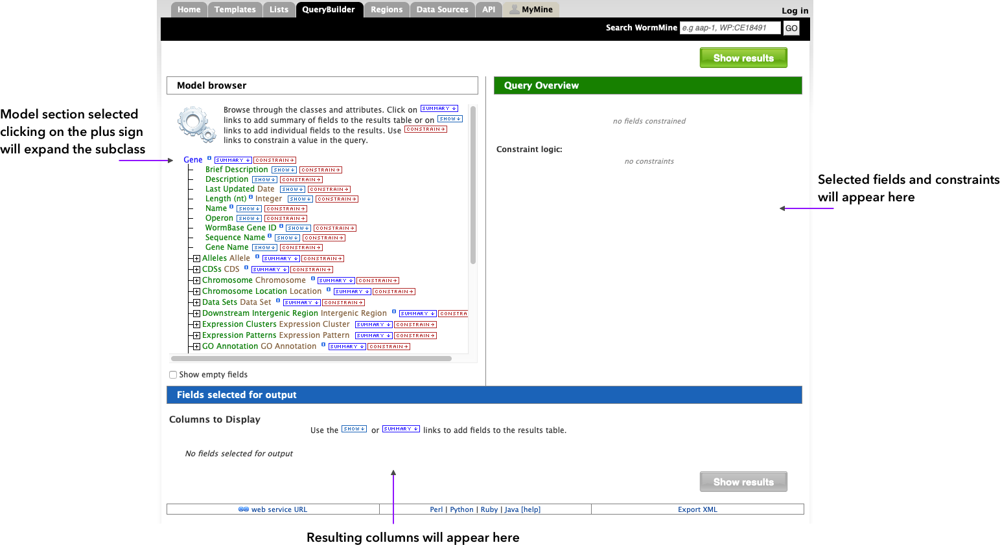
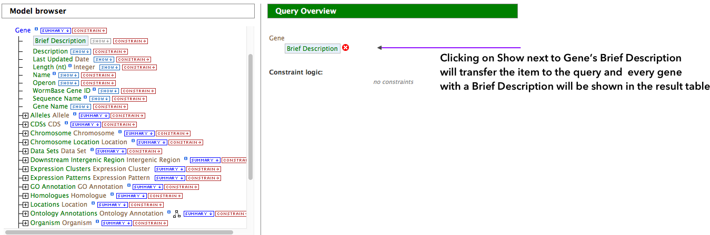
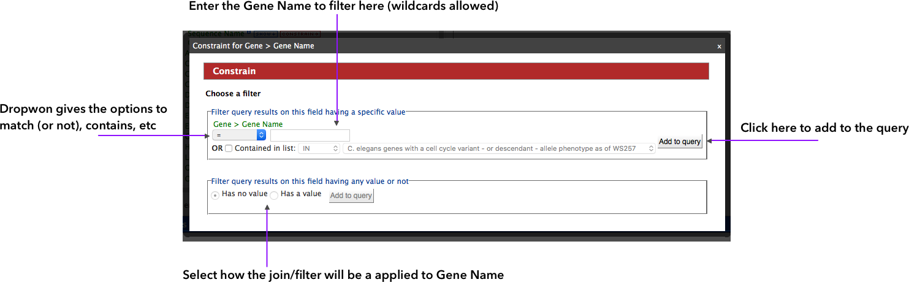
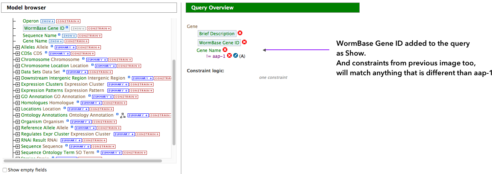
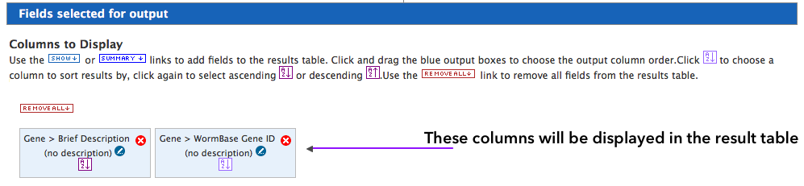

QueryBuilder
You can setup your own queries by using the QueryBuilder. The builder is a powerful tool that allows the user to create queries that can span different classes in WormMine and overall different sources of information.The easiest way to get acquainted with the QueryBuilder is to edit and modify a template (just click on the Edit Query button
 ). The builder can be also accessed by clicking on the Select a Data Type to Begin a Query box from the QueryBuilder page, or by clicking the name of the class in the Data Model page. By clicking on the class name, it will bring the builder interface shown below.
). The builder can be also accessed by clicking on the Select a Data Type to Begin a Query box from the QueryBuilder page, or by clicking the name of the class in the Data Model page. By clicking on the class name, it will bring the builder interface shown below.

There are two options to add items from the Model Browser side of the screen to the query:
- Clicking on Show will transfer the item to the query and the result will have the items'information, meaning all elements with that item will be shown in the final table

- Clicking on Constrain will also transfer the item to query, but will ask for input regarding the constraint to be applied. If, for instance, Gene Name is selected, the dialog will ask for a match (=) or not (!=), or some other filter (boolean and wildcards accepted). The last piece of information is how the constrain join will be applied, where the filter will either HAVE or NOT a value. Take a look on the image below.

Adding the constraint to the query will have it displayed on the right side of the screen. We can add more constraints, that will filter even more the result and we can add more Show items, what will included additional columns to the result table.

The columns to be displayed are shown at the bottom of the builder. Column order can be easily modified by dragging and dropping the boxes in the desired order. To run the query, simply click on Show Results .
